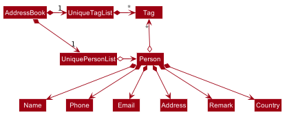

By: Team T17-2 Since: Aug 2019 Licence: MIT
1. Setting up
Refer to the guide here.
2. Design
2.1. TravEzy Architecture
The Architecture Diagram given above explains the high-level design of the App. Given below is a quick overview of each component.
| TravEzy is mainly a Common Line Interface (CLI) desktop application. Hence, users will just need to interact with the text UI to trigger responses from Travezy. |
-
At app launch: Initializes the components in the correct sequence, and connects them up with each other.
-
At shut down: Shuts down the components and invokes cleanup method where necessary.
Commons represents a collection of classes used by multiple other components.
The following class plays an important role at the architecture level:
-
LogsCenter: Used by many classes to write log messages to the App’s log file.
The rest of the App consists of four components.
Each of the four components
-
Defines its API in an
interfacewith the same name as the Component. -
Exposes its functionality using a
{Component Name}Managerclass.
For example, the Logic component (see the class diagram given below) defines it’s API in the Logic.java interface and exposes its functionality using the LogicManager.java class.
How the architecture components interact with each other
The Sequence Diagram below shows how the components interact with each other for the scenario where the user issues the command delete 1.

delete 1 commandThe sections below give more details of each component.
2.2. UI component
API : Ui.java
The UI consists of a MainWindow that is made up of parts e.g.CommandBox, ResultDisplay, PersonListPanel, StatusBarFooter etc. All these, including the MainWindow, inherit from the abstract UiPart class.
The UI component uses JavaFx UI framework. The layout of these UI parts are defined in matching .fxml files that are in the src/main/resources/view folder. For example, the layout of the MainWindow is specified in MainWindow.fxml
The UI component extends out to many different pages in TravEzy which represents the features that it has. This includes:
-
Calendar
-
Itinerary
-
Financial Tracker
-
Travel Diary
-
Address Book
-
Achievements
| The Calendar and Itinerary window work in tandem with each other. Due to their dependency, modification to one of the feeature might result in the the other feature breaking. |
The UI component,
-
Facilitate the changing of scenes between different user interface for the different features
-
Gets the requested page
-
Changes the scene on the primary stage upon request
-
Executes user commands using the
Logiccomponent. -
Listens for changes to
Modeldata so that the UI can be updated with the modified data.
2.3. Logic component
API :
Logic.java
-
Logicgets theAddressBookLogic -
AddressBookLogicuses theAddressBookParserclass to parse the user command. -
This results in a
Commandobject which is executed by theAddressLogicManager. -
The command execution can affect the
Model(e.g. adding a person). -
The result of the command execution is encapsulated as a
CommandResultobject which is passed back to theUi. -
In addition, the
CommandResultobject can also instruct theUito perform certain actions, such as displaying help to the user.
Given below is the Sequence Diagram for interactions within the Logic component for the execute("delete 1") API call.

delete 1 Command
The lifeline for DeleteCommandParser should end at the destroy marker (X) but due to a limitation of PlantUML, the lifeline reaches the end of diagram.
|
2.4. Model component
API : Model.java
The Model,
-
stores the different model used for different packages inside Travezy
-
stores a
UserPrefModelobject used to get and set user preferences -
stores a
AddressBookModelobject used to get data from the address book -
supply a
StatisticsModelwhich is only evaluated upon request -
exposes an unmodifiable
ObservableList<Person>that can be 'observed' e.g. the UI can be bound to this list so that the UI automatically updates when the data in the list change. -
does not depend on any of the other three components.
As a more OOP model, we can store a Tag list in Address Book, which Person can reference. This would allow Address Book to only require one Tag object per unique Tag, instead of each Person needing their own Tag object. An example of how such a model may look like is given below. |
2.5. Storage component
API : Storage.java
The Storage component,
-
can save
UserPrefobjects in json format and read it back. -
can save the Address Book data in json format and read it back.
2.6. Common classes
Classes used by multiple components are in the seedu.addressbook.commons package.
3. Implementation
This section describes some noteworthy details on how certain features are implemented.
3.1. [Proposed] Undo/Redo feature
3.1.1. Proposed Implementation
The undo/redo mechanism is facilitated by VersionedAddressBook.
It extends AddressBook with an undo/redo history, stored internally as an addressBookStateList and currentStatePointer.
Additionally, it implements the following operations:
-
VersionedAddressBook#commit()— Saves the current address book state in its history. -
VersionedAddressBook#undo()— Restores the previous address book state from its history. -
VersionedAddressBook#redo()— Restores a previously undone address book state from its history.
These operations are exposed in the Model interface as Model#commitAddressBook(), Model#undoAddressBook() and Model#redoAddressBook() respectively.
Given below is an example usage scenario and how the undo/redo mechanism behaves at each step.
Step 1. The user launches the application for the first time. The VersionedAddressBook will be initialized with the initial address book state, and the currentStatePointer pointing to that single address book state.

Step 2. The user executes delete 5 command to delete the 5th person in the address book. The delete command calls Model#commitAddressBook(), causing the modified state of the address book after the delete 5 command executes to be saved in the addressBookStateList, and the currentStatePointer is shifted to the newly inserted address book state.

Step 3. The user executes add n/David … to add a new person. The add command also calls Model#commitAddressBook(), causing another modified address book state to be saved into the addressBookStateList.

If a command fails its execution, it will not call Model#commitAddressBook(), so the address book state will not be saved into the addressBookStateList.
|
Step 4. The user now decides that adding the person was a mistake, and decides to undo that action by executing the undo command. The undo command will call Model#undoAddressBook(), which will shift the currentStatePointer once to the left, pointing it to the previous address book state, and restores the address book to that state.

If the currentStatePointer is at index 0, pointing to the initial address book state, then there are no previous address book states to restore. The undo command uses Model#canUndoAddressBook() to check if this is the case. If so, it will return an error to the user rather than attempting to perform the undo.
|
The following sequence diagram shows how the undo operation works:

The lifeline for UndoCommand should end at the destroy marker (X) but due to a limitation of PlantUML, the lifeline reaches the end of diagram.
|
The redo command does the opposite — it calls Model#redoAddressBook(), which shifts the currentStatePointer once to the right, pointing to the previously undone state, and restores the address book to that state.
If the currentStatePointer is at index addressBookStateList.size() - 1, pointing to the latest address book state, then there are no undone address book states to restore. The redo command uses Model#canRedoAddressBook() to check if this is the case. If so, it will return an error to the user rather than attempting to perform the redo.
|
Step 5. The user then decides to execute the command list. Commands that do not modify the address book, such as list, will usually not call Model#commitAddressBook(), Model#undoAddressBook() or Model#redoAddressBook(). Thus, the addressBookStateList remains unchanged.

Step 6. The user executes clear, which calls Model#commitAddressBook(). Since the currentStatePointer is not pointing at the end of the addressBookStateList, all address book states after the currentStatePointer will be purged. We designed it this way because it no longer makes sense to redo the add n/David … command. This is the behavior that most modern desktop applications follow.

The following activity diagram summarizes what happens when a user executes a new command:

3.1.2. Design Considerations
Aspect: How undo & redo executes
-
Alternative 1 (current choice): Saves the entire address book.
-
Pros: Easy to implement.
-
Cons: May have performance issues in terms of memory usage.
-
-
Alternative 2: Individual command knows how to undo/redo by itself.
-
Pros: Will use less memory (e.g. for
delete, just save the person being deleted). -
Cons: We must ensure that the implementation of each individual command are correct.
-
Aspect: Data structure to support the undo/redo commands
-
Alternative 1 (current choice): Use a list to store the history of address book states.
-
Pros: Easy for new Computer Science student undergraduates to understand, who are likely to be the new incoming developers of our project.
-
Cons: Logic is duplicated twice. For example, when a new command is executed, we must remember to update both
HistoryManagerandVersionedAddressBook.
-
-
Alternative 2: Use
HistoryManagerfor undo/redo-
Pros: We do not need to maintain a separate list, and just reuse what is already in the codebase.
-
Cons: Requires dealing with commands that have already been undone: We must remember to skip these commands. Violates Single Responsibility Principle and Separation of Concerns as
HistoryManagernow needs to do two different things.
-
3.2. [Proposed] Data Encryption
{Explain here how the data encryption feature will be implemented}
3.3. Logging
We are using java.util.logging package for logging. The LogsCenter class is used to manage the logging levels and logging destinations.
-
The logging level can be controlled using the
logLevelsetting in the configuration file (See Section 3.4, “Configuration”) -
The
Loggerfor a class can be obtained usingLogsCenter.getLogger(Class)which will log messages according to the specified logging level -
Currently log messages are output through:
Consoleand to a.logfile.
Logging Levels
-
SEVERE: Critical problem detected which may possibly cause the termination of the application -
WARNING: Can continue, but with caution -
INFO: Information showing the noteworthy actions by the App -
FINE: Details that is not usually noteworthy but may be useful in debugging e.g. print the actual list instead of just its size
3.4. Configuration
Certain properties of the application can be controlled (e.g user prefs file location, logging level) through the configuration file (default: config.json).
4. Features
TravEzy has several features which are listed below. Each of these features have their own design and implementation logic.
4.1. Calendar
The calendar feature in TravEzy allows users to easily find a free duration of time to travel.
Calendar Class Diagram:+
The above diagram shows that Calendar stores information about the state of the user’s calendar, including information about the user’s current view as indicated by currentViewOnlyMonth.
The above sequence diagram shows the sequence of events that take place when a user calls show command. Do note that the above sequence of events are very similar to those for the other commands which extend Command class.
The above activity diagram shows how smartSuggest command works.
4.2. Itinerary
The itinerary feature in TravEzy allows users to organize their events by giving a certain time they planned to finish each event.
Current, the itinerary feature supports the basic commands of add, delete, edit and marking your events as done. It also includes other more advanced commands such as search, sort and wish™.
| Not sure what you should do during a certain duration of time? Use the wish function in the itinerary and TravEzy will grant you three event suggestions based on your past entries. These suggestions are personalized for each user! |
The itinerary feature implements the aforementioned feature based on the use cases below:
Due to the numerous features supported by the itinerary, it requires a complex structure to ensure that each input by the user are cautiously parsed before giving the appropriate command result.
The Architecture Diagram given above explains the high-level design of the itinerary feature. Inputs given by the user are channeled from the text UI and parsed in the logic package before different commands are formed which generates the model and updates the itinerary object which contains the event list.
| The Calendar and Itinerary window work in tandem with each other. Due to their dependency, modification to one of the feature might result in the the other feature breaking. |
The text UI, logic and storage all stem from the common package of the main TravEzy application.
However, in the parser package of itinerary, it contains various parser objects for the different command.
This is to ensure that each command in the itinerary have only one parser validating the command.
4.2.1. Model Component
The implementation of the model class in TravEzy is to be a generic. Hence, the model object being instantiated
could be any of the following 5 features, Calendar, Itinerary, Financial Tracker, Travel Diary
and Achievements. Below is the model class diagram for the itinerary feature:
The Model, is the crux of the itinerary feature which serves several functions this include:
-
stores the Itinerary data which includes the event list which keeps track of all the events that are included by the user and stores it into the storage in a JSON file.
-
exposes an unmodifiable ObservableList<Event> that can be 'observed' e.g. the UI can be bound to this list so that the UI automatically updates when the data in the list change.
-
does not depend on any of the other three components, UI, logic and storage which are common through all the features throughout TravEzy.
| A plausible extension to the itinerary model is give users the ability to tag each of their events based on different priority. |
Alternative implementation to the proposed extension:
-
Use javaFX drop down menu to only users to tag based on priority:
PROS: Can use tagging as a search condition and easier for storage / maintenance purposes.
CONS: Limiting the users to only a certain set of taggings.
-
Allow user to type in tagging during the add command template:
add title/[title] date/[date] time/[time] l/[location] d/[description]
PROS: Allows the user to put in any tag they want to allow for more variety. Search function is still applicable for tags but users would need to know the specific tag they used for that particular event.
CONS: Harder to maintain the individual tags in the storage since there could be a lot of tags that are being defined by the user.
4.2.2. Itinerary search command
The search command for specified events in the event list is facilitated by the Itinerary class which contains
an event list and keep track of the events that the user has inputted into TravEzy. There are several search conditions
available for the users to search from based on the different class attributes that form the Event class:
-
search title/[title]
-
search date/[date]
-
search time/[time]
-
search l/[location]
-
search d/[description]
Given below is the sequence diagram of how the Itinerary feature interacts with TravEzy when the search command is being called.
| The lifeline for SearchCommandParser and SearchEventDescriptor should end at the destroy marker (X) but due to a limitation of PlantUML, the lifeline reaches the end of diagram. |
The search command is implement as follows, upon giving the command by the user in the text UI, the command
will be channeled to the Logic class where it identifies it as a itinerary command and passes it to the ItineraryParser
class.
The Itinerary Parser passes through the command into a switch case block and identifies this as a SearchCommand.
This will create a new SearchCommandParser which will then accept the arguments from the user’s input and parse the
arguments of the command.
Once the arguments are parsed and considered as valid, the SearchCommandParser will generate a new SearchCommand.
The SearchCommand will in turn create a "pseudo-event" known as the SearchEventDescriptor which is an event
which only contains attributes with the search condition while the rest of it’s attribute will be placed as null.
This SearchEventDescriptor will in turn be returned and used in the Predicate field as the event in comparison.
The filterEvents(e) method will be called with e being the SearchEventDescriptor that is being generated. Events
that are currently in the event list will be filtered accordingly based on whether it matches the attributes in the
SearchEventDescriptor. Finally, the filteredList will be generated and returned.
The aforementioned steps could be easily summarized using an activity diagram when the user executes a search command in the itinerary:
The following search command is implemented in the series of steps as described in the activity diagram as shown above is to ensure that validation of the arguments given in the user command first before the SearchCommand is generated.
Once the arguments from the user input has been verified, the "pseudo-event" created can help to proof-read whether
users have given any conditions for the search. It will return false if all the attributes in the SearchEventDescriptor.
Running through all the events in the event list will ensure that all the events are being considered in the filtering process.
This sequential approach in implementing the SearchCommand will ensure that all the current events are being looked through
based on the specific search condition and only the filtered list will be given as a result.
4.2.3. Future Extensions
As indicated in the user guide, there are several features which are yet to be implemented during v1.3 and even during v1.4. These feature include the undo, redo and wish command which are supposedly included during the v1.3 or v1.4 of the TravEzy itinerary implementation. However, due to the sheer number of features that are already implemented in the Travezy itinerary during v1.3, these features will be postponed to the next version instead. While implementing the TravEzy, we have in mind to provide you with quality instead of quantity. Hence, after much consideration, these features are left to later versions instead.
That being said, stay tuned for TravEzy v2.0 for these cool features such as undo-ing your previous action calls that you have made in TravEzy itinerary, and if you happen to undo the wrong command, fret not since the redo command will also be implement in compliment to the undo command so that you as a user can call redo and revert back the undo call too! Lastly, there is this awesome feature in the upcoming which is the wish command, what it does is that TravEzy will refer back to the user’s storage and look through all the past events that the user has inputted in his itinerary list. Then based on these information provided, TravEzy will suggest 3 events that are suitable for the user to consider and add it into his current itinerary event list. These 3 events that TravEzy itinerary suggest will be something that the user will definitely enjoy doing or something that the user has to urgently do. Since it is personalized for each user and anaylzed carefully with the previous event entries.
Hope that you are excited as I am in all these cool features that are coming up in v2.0.
4.3. Financial Tracker
The Financial Tracker feature in TravEzy allows users to keep track of their financial expenses with appropriate categorized expenditure and country.
Architecture:
The Architecture Diagram given above explains the high-level design of the financial tracker feature.
Inputs given by the user are channeled from the textUI and parsed by CommandParser before different commands are formed which generates
the Model and updates the FinancialTracker object which contains the expense list.
The textUI, Log Centre and Storage all stem from the common package of the main TravEzy application.
This is to ensure that each command in financial tracker have only one parser validating the command.
The GUI also collaborate with Model Class directly, which will be changed to only communicate with Logic class in later time.
Financial Tracker Class Diagram
The Model,
stores the FinancialTracker data which includes the ExpenseList which keeps track of all the expenses
that are included by the user and stores it into the storage in a JSON file.
It exposes an unmodifiable ObservableList<Expense> that can be 'observed' e.g. the UI can be bound to this list so that the UI automatically updates when the data in the list change.
Each time a new Country is selected from the javafx drop down menu, an expense list will be generated for that specific country, this
implementation is to ease categorising and sorting.
|
Sequence Diagram example
The above sequence diagram shows the sequence of events that will take place when a user calls Summary command.
Note that that above sequence of events are very likely to those for the other commands in Financial Tracker feature.
Activity Diagram example
The above activity shows how edits command works.
4.4. Diary
4.4.1. Architecture

The architecture diagram above explains the high-level design and implementation of the Diary Feature within TravEzy.
Diary Model has multiple classes which form the basis of a Diary.
This implementation starts at the root object, which is a DiaryEntry. These entries
are stored within a DiaryList, which are then encapsulated within a DiaryBook
After receiving user input from DiaryUi, DiaryParser
changes the input to a executable format, and DiaryCommand allows for execution of the user input.
4.4.2. UI component

DiaryUI, which is represented above, consists of DiaryPage, which encapsulates all the smaller Ui components.
The main components are the:
-
CommandBox→ Captures user input -
ResultDisplay→ Returns the output after the user input has passed through the DiaryCommand -
DiaryListPanel→ Shows an easily readable version of the current DiaryBook
All of these components inherit from the abstract UiPart Class
4.5. Address Book
4.5.1. Logic Component
API :
AddressBookLogic.java
-
AddressBookLogicManageruses theAddressBookParserclass to parse the user command. -
This results in a
Commandobject which is executed by theAddressBookLogicManager. -
The command execution can affect the
AddressBookModel(e.g. adding a person). -
The result of the command execution is encapsulated as a
CommandResultobject which is passed back to theUi. -
In addition, the
CommandResultobject can also instruct theAddressBookPageto perform certain actions, such as displaying help to the user.
Given below is the Sequence Diagram for interactions within the Logic component for the execute("delete 1") API call.
delete 1 Command
The lifeline for DeleteCommandParser should end at the destroy marker (X) but due to a limitation of PlantUML, the lifeline reaches the end of diagram.
|
4.5.2. Model component
API : AddressBookModel.java
The Model,
-
stores the
ReadOnlyAddressBookdata andReadOnlyUserPrefs. -
exposes an unmodifiable
ObservableList<Person>that can be 'observed' e.g. the UI can be bound to this list so that the UI automatically updates when the data in the list change. -
does not depend on any of the other three components.
As a more OOP model, we can store a Tag list in Address Book, which Person can reference. This would allow Address Book to only require one Tag object per unique Tag, instead of each Person needing their own Tag object. An example of how such a model may look like is given below. |
4.6. Achievements
4.6.1. Logic Component
API :
AchievementsLogic.java
The AchievementsLogic is responsible for generating statistics for the different components in Travezy
-
AchievementsLogicManageruses theSupplier<StatisticsModel>to supply theStatisticsModel. -
Getting the
StatisticsModelfrom theSupplier<StatisticsModel>constructs a newStatisticsModelthat gets the statistics data from a Model from another feature e.g.AddressBookModelthat is visible withinModelManager -
AchievementsLogicManagerreturns the resultant data from theStatisticsModelthat is lazily created.
The AchievementsLogic parses Command as well to enable navigation to other Page within Travezy.
-
AchievementsLogicManageruses theAchievementsParserclass to parse the user command. -
This results in a
Commandobject which is executed by theAchievementsLogicManager. -
The command execution can affect the
Model(e.g. adding a person). -
The result of the command execution is encapsulated as a
CommandResultobject which is passed back to theUi. -
In addition, the
CommandResultobject can also instruct theUito perform certain actions, such as displaying help to the user.
Given below is the sequence diagram for generating the StatisticsModel lazily:
The StatisticsModel is lazily created. Hence, the statistics will only be retrieved from each model only when it is evaluated when loading the AchievementsPage scene.
|
4.6.2. Model Component
The StatisticsModel,
-
is constructed from the statistics data from a model of another feature e.g.
AddressBookModelduring instantiation -
contains the statistics data that is generated from a model from another feature e.g.
AddressBookModel -
does not depend on any of the models from other features / packages e.g.
AddressBookModel
5. Documentation
Refer to the guide here.
6. Testing
Refer to the guide here.
7. Dev Ops
Refer to the guide here.
Appendix A: Product Scope
Target user profile:
-
loves to travel frequently
-
travels to many different countries
-
has a need to manage a significant number of contacts from different countries
-
has a need to keep track of travelling expenses
-
lends and pay money to different contacts regularly
-
loves to plan in advance
-
has a need to keep track of different commitments in school
-
love to record his travel itinerary
-
achievements driven
-
has a need to know his/her current progress in completing the achievement
-
motivated to finish his/her accomplishments
-
loves to keep a memory of his/her travels
-
has a need to write down a diary of his/her travel experiences
-
track statistics on inputs (Finances / event and diary entries)
-
prefer desktop apps over other types
-
can type fast
-
prefers typing over mouse input
-
is reasonably comfortable using CLI apps
-
hates cluttering phone with multiple apps
Value proposition: All-in-one travel manager for planning, scheduling, tracking for a user that loves typing commands.
Appendix B: User Stories
Priorities: High (must have) - * * *, Medium (nice to have) - * *, Low (unlikely to have) - *
| Priority | As a … | I want to … | So that I can… |
|---|---|---|---|
|
traveller |
record down all my travelling stories. |
my sweet memories stored |
|
student who likes travelling |
record all my spendings on my trip |
keep track of my budgets |
|
NUS student with unusually high workload |
have a calendar planner |
plan ahead |
|
student who needs friends and likes to travel desperately |
manage my travel itineraries |
keep track of my travel schedule during travels |
|
undisciplined individual |
keep track of my expenses |
limit the accumulation of credit card debts |
|
competitive individual |
keep track of my own progress towards different achievements |
challenge myself |
|
student with many friends abroad |
have an Address Book |
contact my friends who are living in that area |
|
student who needs friends and likes to travel desperately |
have an Address Book |
keep my friends’ contact categorized with different countries |
|
NUS student with unusually high workload |
detect conflicts in my calendar schedule |
know when I’m free to travel around the world |
|
undisciplined individual |
keep track of my expenses |
limit the accumulation of credit card debts |
|
user |
hide private contact details by default |
minimize chance of someone else seeing them by accident |
|
user with many persons in the address book |
sort persons by name |
locate a person easily |
|
monolingual individual |
have a language translator |
communicate with others easily |
|
user |
change my application into different themes |
make my application interface look better |
Appendix C: Use Cases
(For all use cases below, the System is TravEzy and the Actor is the user, unless specified otherwise)
Use case: Delete person
MSS
-
User requests to list persons
-
AddressBook shows a list of persons
-
User requests to delete a specific person in the list
-
AddressBook deletes the person
Use case ends.
Extensions
-
2a. The list is empty.
Use case ends.
-
3a. The given index is invalid.
-
3a1. AddressBook shows an error message.
Use case resumes at step 2.
-
{More to be added}
Use case: Itinerary
Software System : TravEzy Travelling Diary
Use Case: UC01 - Add an event into itinerary page
Actor: User
Guarantees:
. A new event will be added to the itinerary page upon successful command
MSS:
1. User requests to list events
2. TravEzy shows a list of events in the itinerary page
3. User type in the event to be added to the itinerary
4. TravEzy add the event in sequential order
Extensions
2a. The list is empty.
Use case ends.
3a. No event name is given.
3a1. TravEzy shows an error message.
Use case resumes at step 2.
Software System : TravEzy Travelling Diary
Use Case: UC02 - Delete an event into itinerary page
Actor: User
Guarantees:
. Specified event will be deleted in the itinerary page upon successful command
. Event will not be delete if an invalid index is given
MSS:
1. User requests to list events
2. TravEzy shows a list of events in the itinerary page
3. User type in the event to be added to the itinerary
4. TravEzy add the event in sequential order
Extensions
2a. The list is empty.
Use case ends.
3a. The given index is invalid
3a1. TravEzy shows an error message.
Use case resumes at step 2.
Software System : TravEzy Travelling Diary
Use Case: UC03 - Accessing an event
Actor: User
Precondition: Specified event is contain in the list
Guarantees:
. Highlights the specific event to be edited
MSS:
1. User requests to list events
2. TravEzy shows a list of events in the itinerary page
3. User type in the event to be accessed
4. TravEzy highlights the specified event to be edited
Extensions
2a. The list is empty.
Use case ends.
3a. The given index is invalid
3a1. TravEzy shows an error message.
Use case resumes at step 2.
Software System : TravEzy Travelling Diary
Use Case: UC04 - Add details to event
Actor: User
Precondition: User must access to an event (UC03)
Guarantees:
. Update highlighted event with the details
MSS:
1. User requests to edit location / time / description for highlighted event
2. TravEzy prompt for the location / timing / description to be added
3. User inserts the necessary description
4. TravEzy display the changes for that event
Extensions
3a. The given location / timing / description is invalid
3a1. TravEzy shows an error message.
Use case resumes at step 2.
*a. At any time, User chooses to cancel adding details to the event and exit
*a1. TravEzy requests to confirm the exit of event
*a2. User confirms the exit
*a3. TravEzy un-highlights the event selected
Software System : TravEzy Travelling Diary
Use Case: UC05 - Searching for an event
Actor: User
Precondition: User must add some event into the itinerary (UC01). So that these events can be searched based on the condition given.
Guarantees:
. A new event list with the events that met the search conditions.
MSS:
1. User requests to search for event.
2. TravEzy display the events which matchese the search description.
Extensions
1a. The given search command did not indicate any condition (Title / Date / Time / Location / Description).
1a1. TravEzy shows an error message prompting with the correct format.
Use case: Financial Tracker
Software System : TravEzy Travelling Financial Tracker
Use Case: UCFT01 - Add an expense into financial tracker page
Actor: User
Guarantees:
. A new expense will be added to the financial tracker page upon successful command
MSS:
1. User type in the expense to be added to the financial tracker
2. TravEzy add the expense in order by date and time
Extensions
1a. Command format is incorrect.
1a1. TravEzy shows an error message, prompt user with proper command format.
Use case resumes at step 1.
{More to be added}
Use case: Calendar
{More to be added}
Use case: Diary
{More to be added}
Appendix D: Non Functional Requirements
-
Should work on any mainstream OS as long as it has Java
11or above installed. -
Should be able to hold up to 1000 persons without a noticeable sluggishness in performance for typical usage.
-
A user with above average typing speed for regular English text (i.e. not code, not system admin commands) should be able to accomplish most of the tasks faster using commands than using the mouse.
{More to be added}
Appendix F: Product Survey
Product Name
Author: …
Pros:
-
…
-
…
Cons:
-
…
-
…
Appendix G: Instructions for Manual Testing
Given below are instructions to test the app manually.
| These instructions only provide a starting point for testers to work on; testers are expected to do more exploratory testing. |
G.1. Launch and Shutdown
-
Initial launch
-
Download the jar file and copy into an empty folder
-
Double-click the jar file
Expected: Shows the GUI with a set of sample contacts. The window size may not be optimum.
-
-
Saving window preferences
-
Resize the window to an optimum size. Move the window to a different location. Close the window.
-
Re-launch the app by double-clicking the jar file.
Expected: The most recent window size and location is retained.
-
{ more test cases … }
G.2. Deleting a person
-
Deleting a person while all persons are listed
-
Prerequisites: List all persons using the
listcommand. Multiple persons in the list. -
Test case:
delete 1
Expected: First contact is deleted from the list. Details of the deleted contact shown in the status message. Timestamp in the status bar is updated. -
Test case:
delete 0
Expected: No person is deleted. Error details shown in the status message. Status bar remains the same. -
Other incorrect delete commands to try:
delete,delete x(where x is larger than the list size) {give more}
Expected: Similar to previous.
-
{ more test cases … }
G.3. Saving data
-
Dealing with missing/corrupted data files
-
{explain how to simulate a missing/corrupted file and the expected behavior}
-
{ more test cases … }